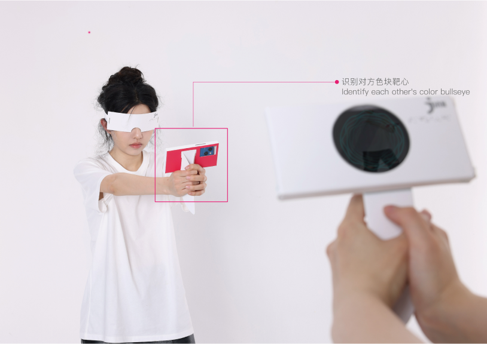

LUO SHAN
luoshan3398@qq.com
Hearing the Bullseye
2021-2022
How can we facilitate VI individuals to play together with sighted
individuals? In the VI community, social play plays a crucial role as it enhances
communication and interaction between VI and sighted individuals, thereby promoting
social harmony. However, due to the physiological VI of VI individuals, VI individuals
often find it challenging to compete or collaborate on an equal level with sighted
individuals during social games.

Hearing the Bullseye
2021-2022
How can we facilitate VI individuals to play together with sighted
individuals? In the VI community, social play plays a crucial role as it enhances
communication and interaction between VI and sighted individuals, thereby promoting
social harmony. However, due to the physiological VI of VI individuals, VI individuals
often find it challenging to compete or collaborate on an equal level with sighted
individuals during social games.
